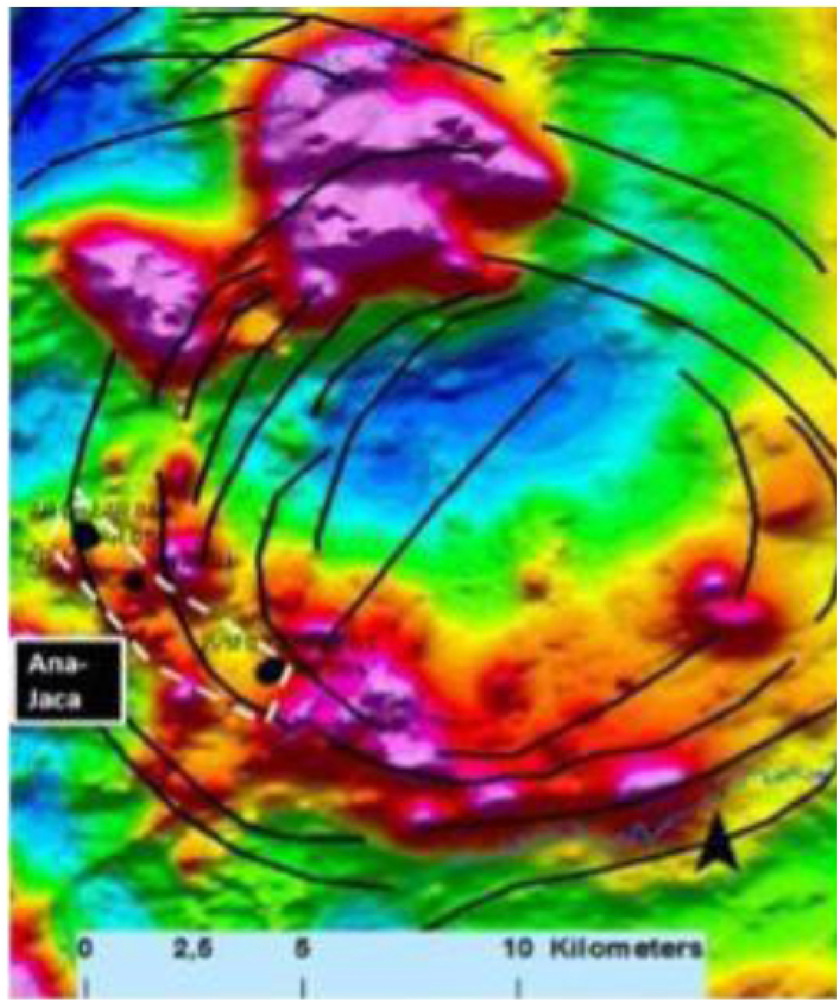

Meio Século de Exploração Mineral no Brasil - Parte 5

Resumo em Português
A quinta parte discute a evolução das interpretações geológicas sobre o Cráton Amazônico e suas implicações para a exploração mineral. O texto descreve o conflito entre modelos clássicos, que associavam muitas mineralizações auríferas a sistemas orogênicos, e interpretações mais recentes que reconhecem forte participação de sistemas magmáticos, epitermalismo e depósitos do tipo pórfiro. O avanço de técnicas geocronológicas modernas permitiu revisar conceitos antigos e reconhecer idades e ambientes geológicos distintos daqueles inicialmente propostos. O autor questiona modelos tectônicos tradicionais baseados em múltiplas subducções e propõe interpretações alternativas envolvendo plumas mantélicas e magmatismo intraplaca. Regiões como Tapajós, Alta Floresta e Aripuanã são apresentadas como exemplos de províncias cujo potencial mineral ainda está em processo de redefinição conceitual. O principal argumento da parte é que a confirmação da existência de sistemas pórfiros e depósitos relacionados no Brasil representa uma nova fronteira exploratória, capaz de ampliar significativamente o potencial mineral do país e alterar estratégias futuras de pesquisa.